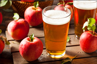
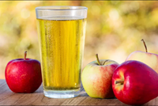
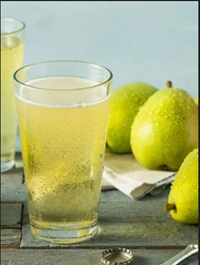

Our Ciders
Classic Dry
Our classic hard cider has a crisp and refreshing taste with a subtle sweetness derived from the apples. It often has a tartness that balances the sweetness and a hint of acidity that provides a refreshing zing. The taste profile comes from our Washington grown apples, which gives it a light, fruity and easy-drinking flavor.
Semi-Dry
A more subdued sweetness than semi-sweet hard cider, with a drier finish. It has a medium to full body and a moderate level of carbonation that gives it a smooth mouthfeel. The natural apple flavors are more prominent in semi-dry hard cider, and it has a crisp and refreshing taste with a subtle tartness.
Semi-Sweet
This cider has a balanced taste that is both sweet and tart. It has a fuller body than the classic hard cider, and a moderate to high level of carbonation that gives it a lively mouthfeel. The sweetness is more prominent in semi-sweet hard cider, but it is still well-balanced with the natural acidity of the apples.
Rosé
Rosé hard cider has a delicate, floral aroma and a light to medium body with a pale pink hue. It has a fruity and slightly sweet taste with notes of strawberry, raspberry, or other red fruits. The carbonation is typically on the higher side, giving it a lively effervescence and a refreshing finish.
Perry
Pear hard cider, also known as perry, has a light to medium body with a pale to golden color. It has a delicate and subtle flavor profile with a distinctive pear aroma and a slightly sweet taste. The natural acidity of the pears provides a pleasant tartness that balances the sweetness and makes for a refreshing and easy-drinking beverage.